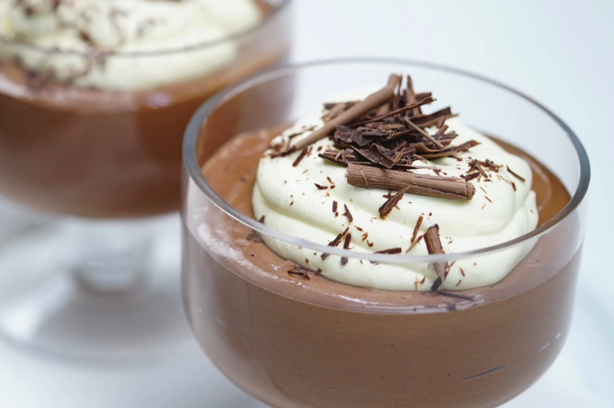

Chocolate Mousse Recipe:

Ingredients:
- 300g CADBURY Baking Dark Chocolate, roughly chopped
- 3 eggs, at room temperature
- 1/4 cup (55g) caster sugar
- 1 tbsp good-quality cocoa powder, sifted
- 300ml thickened cream
- Whipped cream, to serve
- Grated chocolate, to serve
Directions:
- Place the chocolate in a heatproof bowl over a pan of gently simmering water (don't let the bowl touch the water). Stir until melted. Remove bowl from heat and set aside to cool slightly.
- Place eggs and sugar in a large bowl and beat with electric beaters for 5 minutes, or until mixture is pale, thick and doubled in volume. Fold in cocoa powder and cooled chocolate until combined.
- In a separate bowl, whip cream until thickened (be careful not to over-beat). Use a large metal spoon to carefully fold the cream into the chocolate mixture, trying to keep the mixture as light as possible. Spoon into 6 serving glasses and chill in fridge for at least 1 hour. Remove from fridge 15 minutes before serving, then top with extra whipped cream and grated chocolate to serve.